Beispiel für den geplanten Streak-Bonus: Ab 10 Lerntagen fliegen drei dezente Vögel durch die
Wald-Ansicht. Die Szene stammt aus src/forest.js; die Vögel sind hier als
Design-Vorschau ergänzt und noch nicht in der App implementiert.

Die Vögel sind in Seitenansicht gezeichnet und schlagen mit den Flügeln, während der Schwarm
langsam von links nach rechts über den Wald zieht. Bei aktivierter
prefers-reduced-motion-Einstellung bleiben sie statisch im Bild.
Sichtbar sind sie nur in der Wald-Ansicht – nicht auf der Timer-Seite und nicht im Mini-Fenster.